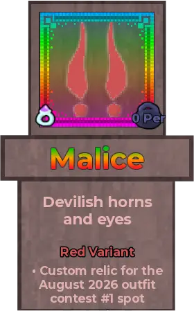
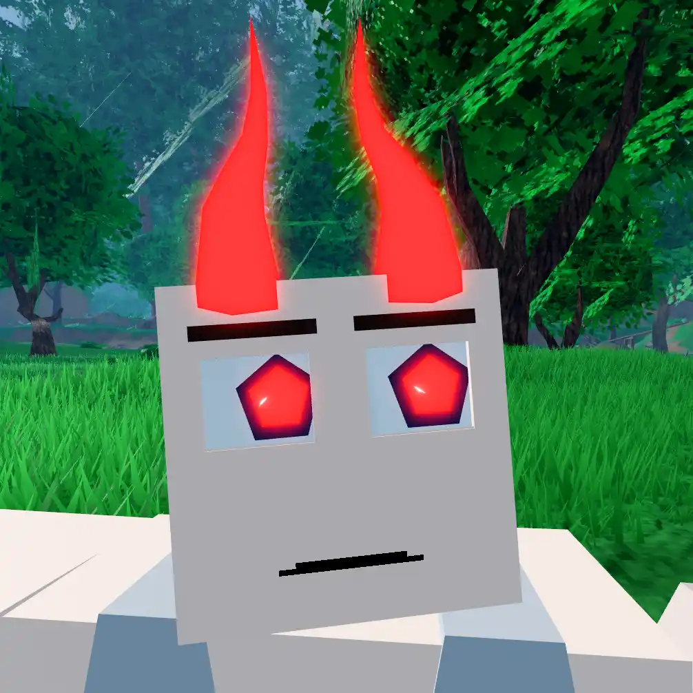
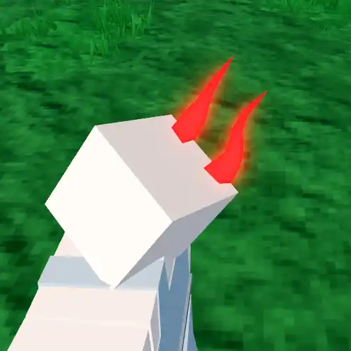
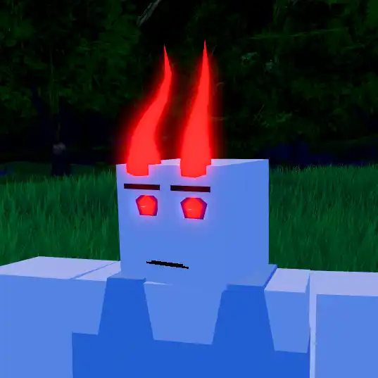
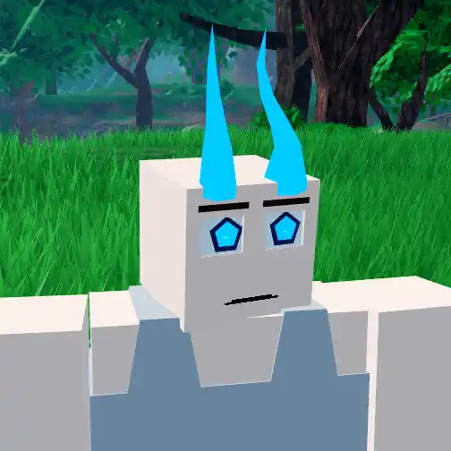
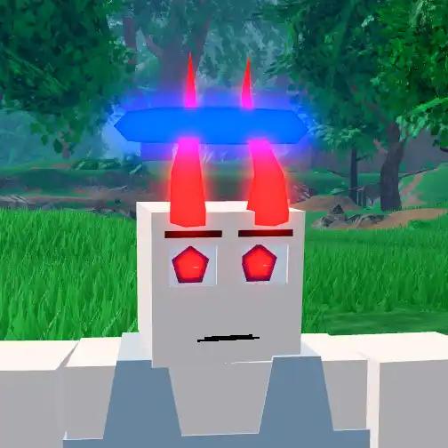
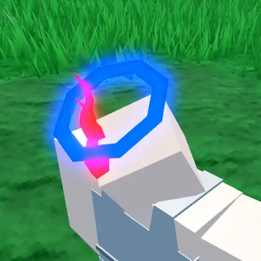
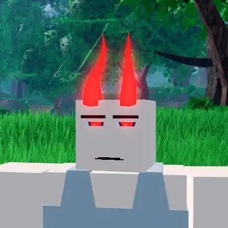
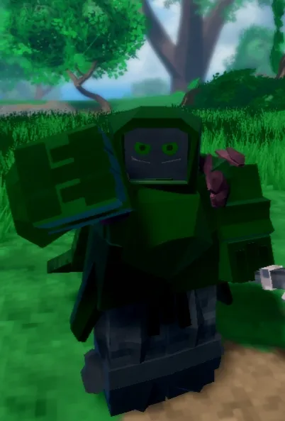
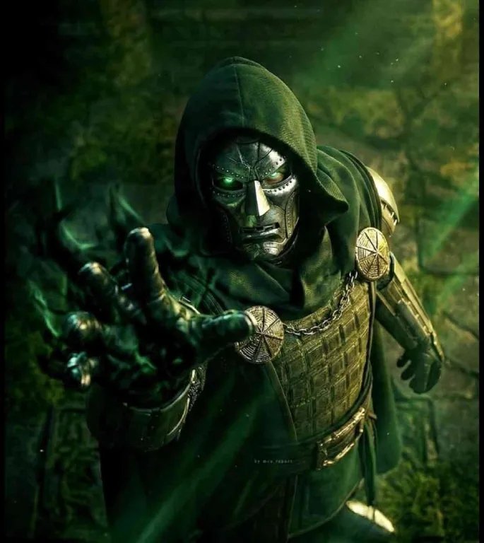

Malice

Info
Slot: Accessory
Recolorable?: Yes
Unique Colors: None
Particle Effects: Yes
Sound Effects: None
Owner: cooIshady
Appearance & Effects
In-game description: Devilish horns and eyes
Custom relic for the August 2026 outfit contest #1 spot
Malice is a pair of slender, glowing demon horns with a pair of glowing eyes. Unlike Skai's Horns, the Malice horns point straight upwards and are untextured. Malice also comes with a pair of glowing eyes that match the color of the horns. Malice does not have any unique colors, but can by recolored.
Inspiration
Malice was inspired by demon horns, hence the relic being named 'Malice'. cooIshady, the owner, also wanted Malice to fit well with Kaylie's Halo specifically, so the horns were designed to go through the halo without any clipping (see pictures below).
Malice is the custom relic that cooIshady chose to have added to the game after he got first place in the August 2026 outfit contest with his Dr. Doom outfit (seen below). Malice is the 29th and newest relic to be added to Taleara.

Malice viewed up close

Viewed from the back
Image Gallery

Malice at night

Colored blue
Colored green

Malice stylized with Kaylie's Halo

The horns passing through the halo

Dubiously squinting

cooIshady's Dr. Doom outfit, which won him the contest

The inspiration for cooIshady's Dr. Doom outfit